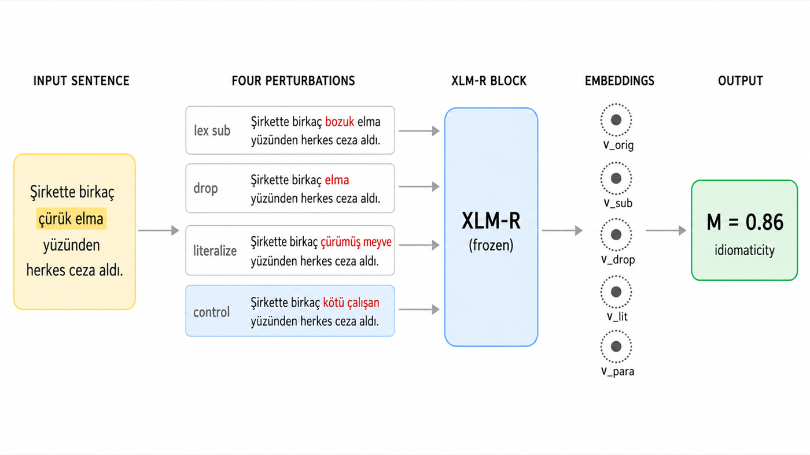
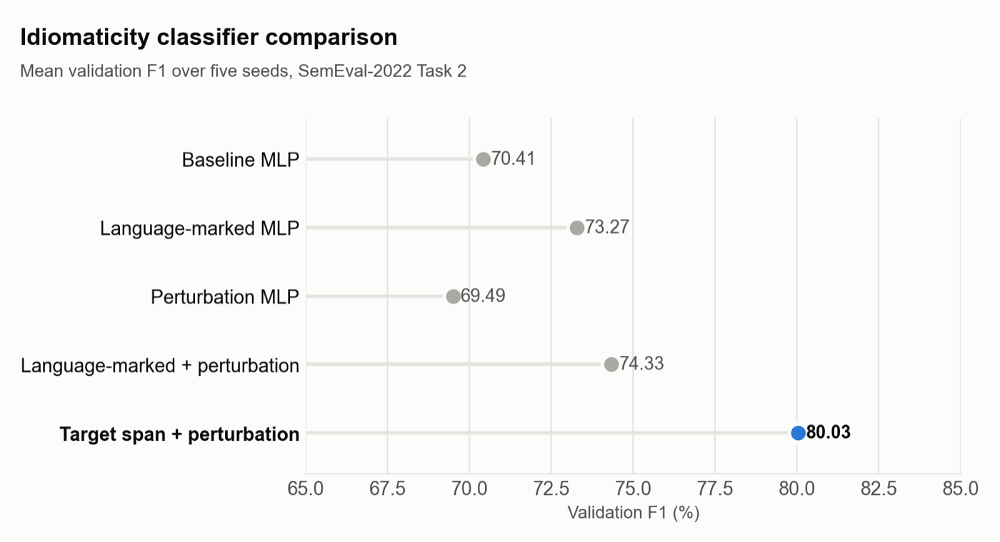
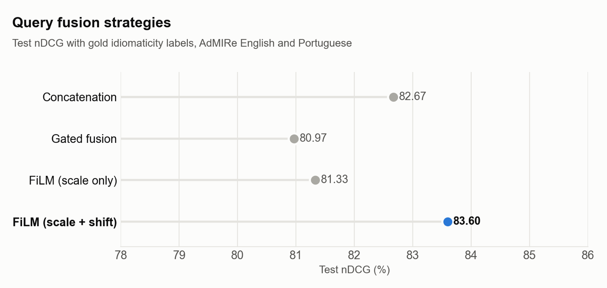
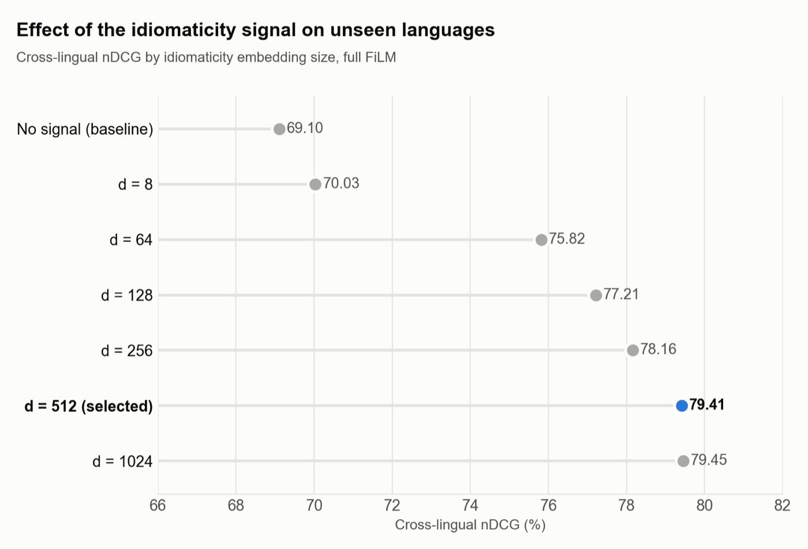

NLP PROJECT
AdMIRe multimodal ranking
Given a sentence with an idiom, rank five images by how well they show its meaning in context. Built for the AdMIRe 2 shared task, trained on English and Portuguese and tested on 15 languages.
- Context
- YZV405E Natural Language Processing, ITU, 2026
- Team
- Deniz Topal, Furkan Yasir Goksu, Faruk Akyol
- Links
- GitHub, Final report

Built with
The problem
"He finally spilled the beans" can be about beans on the floor or about telling a secret. The model has to work out which meaning the sentence uses before it can pick the right image, and 13 of the 15 test languages, including Turkish, Chinese, Georgian, Igbo and Kazakh, never appear in training.
How it works
- An LLM rewrites each sentence four ways: swapping a word, dropping part of the idiom, replacing it with its literal meaning, and paraphrasing it.
- The difference between the original and each rewrite shows how idiomatic the expression is. A classifier turns it into a score between 0 and 1.
- The ranking model reads the sentence with XLM-RoBERTa and each candidate image and caption with CLIP.
- The idiomaticity score scales and shifts the sentence representation before the five candidates are compared.

Results
| Data | Top-1 accuracy | nDCG |
|---|---|---|
| Development, English and Portuguese | 43.00% | 85.65% |
| Test, English and Portuguese | 40.05% | 82.46% |
| 13 languages unseen in training | 35.01% | 73.00% |
Average of five runs with different random seeds.
What each part adds
Focusing on the idiom's own tokens and adding the rewrite features raises the idiomaticity classifier's F1 from 70.4% to 80.0%.
Using the idiomaticity score raises nDCG on unseen languages from 69.1% to 79.4%.


